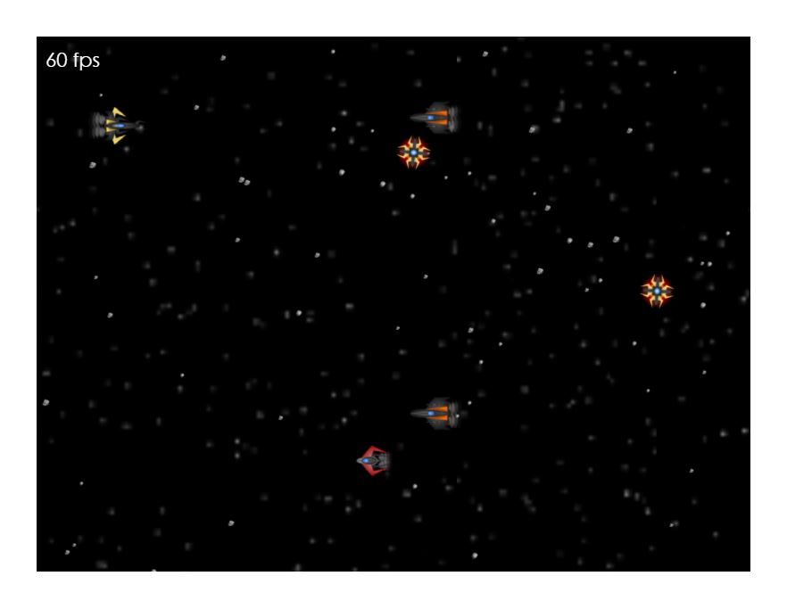
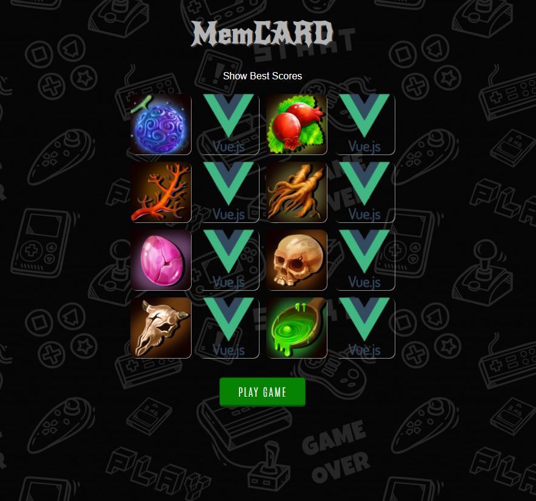

Developing 3d game engine from scratch in javascript without any third-party frameworks,
supports
webgl 1.1 only.
Physically based lighting as well as phong lighting
Easy skeletal animation system
Infinite terrain rendering with upcoming support of vegetation (trees/grass/etc)
Offload CPU intensive task to web workers to provide stable framerate and user interaction
Node based material editor to create dynamic materials and particle systems easily , as well support rapid application development using node graph,
Simple 3d Physics engine that also works in web workers
and many more.
JavaScript 3d game engine
node based open world engine in my own 3d engine in browser
infinite terrain rendering with LOD and atmosphere scattering
Enhanced 3d game engine using webgl 1.1 and javascript
node based open world engine in my own 3d engine in browser
infinite terrain rendering with LOD and atmosphere scattering
Space shooter game PIXIJS and typescript

2d shooting game developed using pixijs , typescript and webpack
Based on webgl , pixijs, fabricjs , webaudio ,glsl and ffmpeg.js
Create video content in browser
Advanced animation system
GPU based effects
3d support for rendering 3d environment to video
Small 3d game engine in webgl
raw is a small and simple webgl 3d game engine using vanilla javascript and webgl 1.1 api, its still in development and the goal is speed over accuracy, it is designed to develop games for the web which can run on desktop and mobile devices.
Hybrid entity component system
Transform hierarchy with animation system
Extendable shader system (highly overridable shader model)
Phong model material system with light (directional light, spot light , point light)
Unlimited lights system using forward rendering
Fast and dirty shadow mapping system
Multi threaded large terrain system with dynamic level of details and mesh optimization
Skeletal system with dual quaternion skinning
Basic inverse kinematics using FABRIK
Roadmap
Multi threaded physics engine implement using web assembly
Improve critical systems using web assembly
Multi threaded particle system
Dynamic sound system using basic sound sampler and synthesizer
Webvr support with positional 3d sound
Tools for world editor and game designer
Webtoon animation creator , i developed this tool for a south korean company that is used in house for designing webtoon animation and publish them on web.
platform for creating and publish animated webtoons with sounds, can export to video or play in real-time using javascript/webgl , works on pc/mobile browsers
built using
html5
webgl/pixijs
fabricjs
webaudio
Enhanced 3d game engine using webgl 1.1 and javascript
My upcoming 3d game engine based on previous enigne (raw) , it has some intersting features for example 3d UI and physics engine. will share the source code soon.
Hybrid entity component system
Transform hierarchy with animation system
Extendable shader system (highly overridable shader model)
Phong model material system with light (directional light, spot light , point light)
Unlimited lights system using forward rendering
Fast and dirty shadow mapping system
Multi threaded real-time terrain system with dynamic level of details and mesh optimization using quadtrees. it can render extremely large terrains with easy to use objects
Skeletal system with dual quaternion skinning
Multi threaded extendable particle system
Post processing effects pipeline
Fast 3d physics engine.
3d UI system with easy component model to add more ui components
Memory card game using vue.js

MemCARD is test project for a job application and it was developed using vue.js in 3 days . this is a memory game with 16 cards and 8 pairs